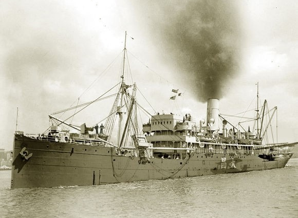

“海上霸主”——航空母舰

*中国第一艘航母001型-辽宁舰
简介
航空母舰，简称航母，是海上的绝对力量。她是以舰载机为主要战斗装备，并为其提供海上活动基地， 同时具有少量防空、反潜、反舰力量的大型舰艇。
发展历史
当飞机被发明后，许多国家便开始寻找在军舰上起降飞机的方法，在不屑努力下，1910年11月14日， 美国飞行员伊利成功从“伯明翰”号巡洋舰上起飞，宣告了海军航空这一概念的诞生。 一战时，便于起降的水上飞机受各国海军青睐，英国制造出世界上第一艘水上飞机母舰，这便是后来 航母的雏形。值得一提的是，在军阀混战时期，张作霖统帅的奉系军阀改造出了中国第一艘“准航母”——“镇海”号水上飞机母舰， 堪称是中国航母起源。

*中国第一艘“准航母”-镇海号
随着技术发展，英国率先用货轮改装出了世界上第一艘航空母舰-“百眼巨人”号，并 制造出世界上第一艘“血统纯正”的航母-“竞技神”号。 同时，日本与美国海军也相继制造出航母，海上航空力量逐渐形成。
*世界第一艘航母-“百眼巨人”号
早期的航母大多由货轮改装而来，并且在战斗中只起到辅助作用， 很多国家难以摆脱“大炮巨舰”的桎梏，一战时，海上仍是战列舰与巡洋舰的天下。 随着舰载机的不断升级迭代，海航力量越来越强大，人们逐渐意识到了航母可以“超视距作战”的优点 航母逐渐走上了海军战场的主舞台，“大炮巨舰”色彩逐渐褪去。
二战后，战列舰与巡洋舰消失在了历史的长河中，航空母舰成为了真正的海上霸主 刚刚起步的中国海军优先发展“空潜快”，但是航母一直是我们最大的梦想，刘华清 曾说过：“中国不发展航母，我死不瞑目！” 在试验阶段，我国先后购进了轻型航母“墨尔本”号、重型载机巡洋舰“基辅”号、“明斯克”号，前者被拆解研究， 后两者被改造为航母酒店与航母主题公园。更为重要的是，我国已经买到了货真价实的航母-“瓦良格”号！
*抵达中国时已经锈迹斑斑的“瓦良格”号
2002年3月3日，“瓦良格”号抵达大连。等待她的，除了重生，还有一整个国家的期冀。 经过十年的不懈努力，中国史上第一艘航母——“辽宁”号成功下水。或许这只是一艘载机量只有 三十六的航母，但伏在她背上的，除了那三十六架奸-15外，还有一只即将苏醒的巨龙
2017年4月26日，002型航母山东舰，中国第二艘航空母舰，也是中国第一艘完全自主研发制造的国产航空母舰，在中国船舶重工集团公司大连造船厂举行下水仪式。 我国从此有了完全自主生产的航母，意味着中国正式掌握了现代航母建造技术，标志着中国海军正式迎来中国国产航母时代。 2022年6月17日上午，中国第三艘航空母舰下水命名仪式在中国船舶集团有限公司江南造船厂举行。 这艘名为福建的庞然大物，搭载了电磁弹射技术，让她的甲板挺得直，也让中国人的耀斑挺得直！ 福建舰排水量八万余吨，打破了亚洲最大战舰记录，此前该记录一直由日本二战中后期战列舰“大和”级保持着。
*曾经的亚洲第一航母，同时也是最短命的航母-“信浓”号
相关知识
中国现役航母有001型（“辽宁”号）、002型（“山东”号），003型（“福建”号）下水成功，处于试验阶段。 航空母舰的命名规则：由省、自治区、直辖市命名。